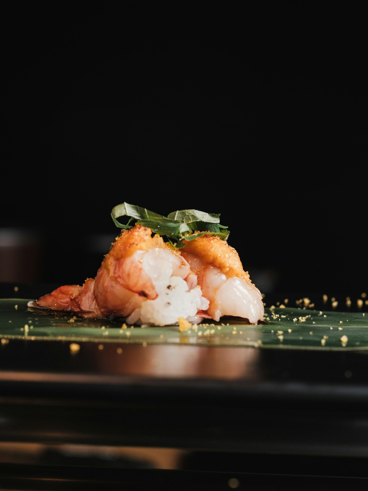
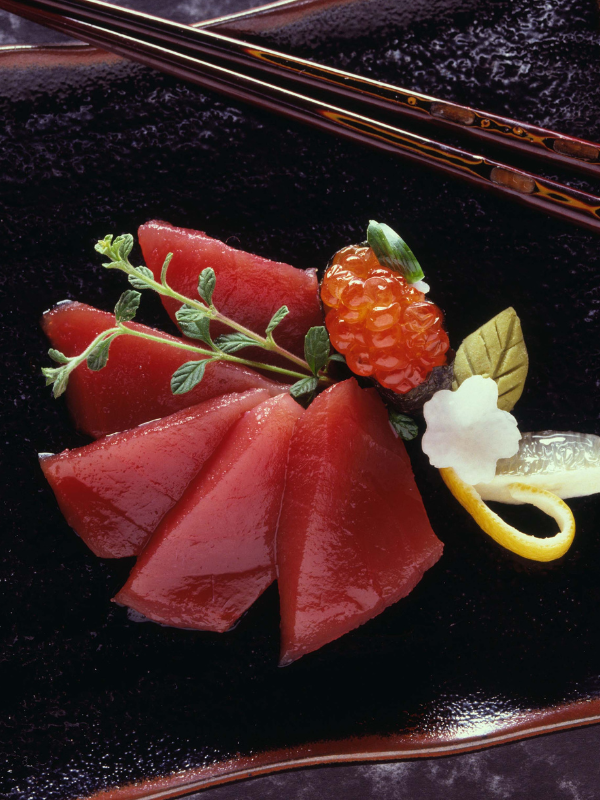
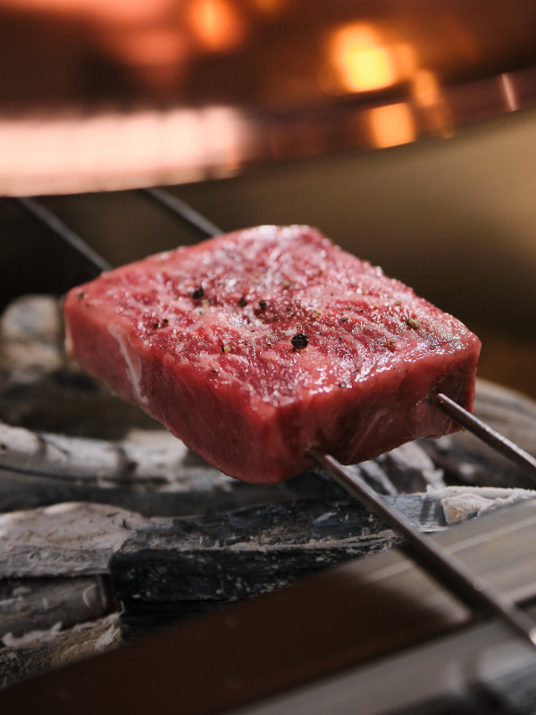
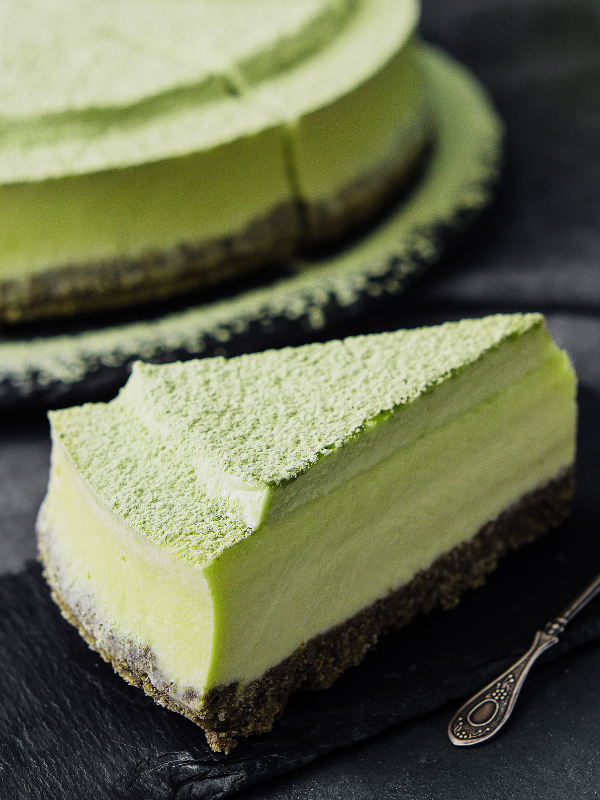

Kōhaku
L'ambre et la braise. Une cuisine japonaise d'exception, entre tradition de Kyoto et exigence lyonnaise, portée par le Chef Kenji Tanaka.
Chez Kōhaku, chaque assiette obéit à une même exigence : la vérité du produit. Poissons sélectionnés au jour le jour, légumes de petits producteurs de la région lyonnaise, riz cuit à la minute — la cuisine japonaise s'exprime ici dans sa forme la plus pure, sans artifice, portée par le geste juste et le silence entre deux bouchées.
Un art culinaire où la saison dicte la carte, et où chaque détail — la vaisselle, la lumière, le tempo du service — compose une expérience entière.
Plats signature
Un aperçu de notre répertoire, entre pièces crues d'exception et plats chauds façonnés à la braise.

Nigiri Omakase

Sashimi Moriawase

Wagyu à la Braise

Mont de Matcha
Une table se mérite, réservez la vôtre
Service en deux temps, midi et soir, du mardi au samedi. Les tables sont limitées afin de préserver la qualité du service.
Réserver une table